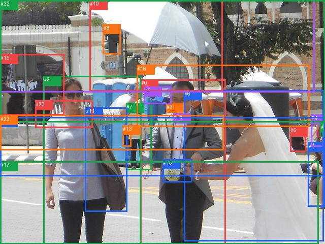

rank_below50_0009

完整GT
| 主体 | GT谓词 | 客体 |
|---|
| 1 | sitting on | 17 |
| 2 | looking at | 0 |
| 2 | looking at | 6 |
| 2 | holding | 10 |
| 2 | carrying | 11 |
| 3 | wearing | 14 |
| 3 | looking at | 16 |
| 3 | picking | 16 |
| 3 | walking on | 17 |
| 4 | carrying | 12 |
| 4 | walking on | 21 |
| 5 | sitting on | 21 |
| 6 | holding | 16 |
| 15 | hanging from | 22 |
| 19 | in front of | 22 |
预测top50
| 排名 | 主体→谓词→客体 | score | fused logit | 是否GT |
|---|
| 1 | #0 → holding → #16 | 0.993383 | 5.011525 | False |
| 2 | #2 → carrying → #11 | 0.991776 | 4.792415 | True |
| 3 | #0 → wearing → #14 | 0.990612 | 4.658889 | False |
| 4 | #0 → holding → #9 | 0.989728 | 4.568013 | False |
| 5 | #7 → walking on → #21 | 0.987875 | 4.400302 | False |
| 6 | #2 → walking on → #17 | 0.987505 | 4.369852 | False |
| 7 | #0 → walking on → #17 | 0.984866 | 4.175537 | False |
| 8 | #7 → carrying → #13 | 0.984833 | 4.173337 | False |
| 9 | #6 → holding → #16 | 0.984383 | 4.143675 | True |
| 10 | #7 → walking on → #17 | 0.980770 | 3.931871 | False |
| 11 | #1 → sitting on → #17 | 0.978015 | 3.795148 | True |
| 12 | #4 → holding → #12 | 0.976740 | 3.737498 | False |
| 13 | #0 → holding → #10 | 0.976726 | 3.736875 | False |
| 14 | #4 → walking on → #21 | 0.975821 | 3.697808 | True |
| 15 | #18 → parked on → #21 | 0.970800 | 3.503968 | False |
| 16 | #15 → on → #22 | 0.965151 | 3.321268 | False |
| 17 | #5 → sitting on → #21 | 0.963249 | 3.266145 | True |
| 18 | #2 → holding → #10 | 0.962807 | 3.253730 | True |
| 19 | #6 → walking on → #17 | 0.962098 | 3.234101 | False |
| 20 | #1 → sitting on → #21 | 0.961536 | 3.218799 | False |
| 21 | #23 → on → #21 | 0.958596 | 3.142094 | False |
| 22 | #8 → attached to → #22 | 0.958495 | 3.139551 | False |
| 23 | #19 → on → #22 | 0.955571 | 3.068421 | False |
| 24 | #8 → attached to → #19 | 0.955376 | 3.063837 | False |
| 25 | #0 → wearing → #3 | 0.954436 | 3.041999 | False |
| 26 | #7 → holding → #9 | 0.926157 | 2.529099 | False |
| 27 | #7 → walking on → #23 | 0.924661 | 2.507435 | False |
| 28 | #15 → on → #19 | 0.921794 | 2.466973 | False |
| 29 | #2 → wearing → #20 | 0.908658 | 2.297357 | False |
| 30 | #0 → holding → #6 | 0.880073 | 1.993120 | False |
| 31 | #18 → in → #22 | 0.869664 | 1.897990 | False |
| 32 | #11 → on → #2 | 0.862848 | 1.839148 | False |
| 33 | #2 → talking to → #0 | 0.845327 | 1.698407 | False |
| 34 | #7 → holding → #10 | 0.841746 | 1.671276 | False |
| 35 | #15 → on → #23 | 0.827729 | 1.569618 | False |
| 36 | #22 → in → #19 | 0.821863 | 1.529021 | False |
| 37 | #4 → walking on → #17 | 0.819982 | 1.516225 | False |
| 38 | #2 → holding → #16 | 0.818416 | 1.505650 | False |
| 39 | #18 → on → #23 | 0.791891 | 1.336362 | False |
| 40 | #5 → walking on → #17 | 0.767316 | 1.193218 | False |
| 41 | #0 → walking on → #21 | 0.766045 | 1.186110 | False |
| 42 | #2 → holding → #9 | 0.759103 | 1.147766 | False |
| 43 | #8 → attached to → #10 | 0.735518 | 1.022803 | False |
| 44 | #12 → walking on → #21 | 0.729579 | 0.992490 | False |
| 45 | #6 → wearing → #14 | 0.727699 | 0.982979 | False |
| 46 | #20 → on → #23 | 0.716602 | 0.927668 | False |
| 47 | #12 → carrying → #4 | 0.714756 | 0.918598 | False |
| 48 | #15 → on → #20 | 0.701515 | 0.854524 | False |
| 49 | #15 → on → #21 | 0.701417 | 0.854056 | False |
| 50 | #2 → walking on → #21 | 0.699572 | 0.845261 | False |
每个GT的采样、谓词与融合定位
| GT方向 | GT谓词 | 阶段 | slot | 最佳谓词 | GT词logit | pair logit | GT融合logit | GT词对内rank |
|---|
| #1→#17 | sitting on | hit50 | 33 | sitting on | 3.8971171379089355 | -0.1019686758518219 | 3.7951483726501465 | 1 |
| #2→#0 | looking at | wrong_predicate | 106 | talking to | 0.9714384078979492 | -0.778304934501648 | 0.19313347339630127 | 7 |
| #2→#6 | looking at | rank_below50 | 87 | looking at | 0.6362514495849609 | -0.6727341413497925 | -0.03648269176483154 | 1 |
| #2→#10 | holding | hit50 | 26 | holding | 3.289717197418213 | -0.035987645387649536 | 3.2537295818328857 | 1 |
| #2→#11 | carrying | hit50 | 1 | carrying | 4.374087810516357 | 0.4183274507522583 | 4.792415142059326 | 1 |
| #3→#14 | wearing | rank_below50 | 168 | wearing | -1.9810571670532227 | -1.1202962398529053 | -3.101353406906128 | 1 |
| #3→#16 | looking at | not_selected | None | None | None | None | None | None |
| #3→#16 | picking | not_selected | None | None | None | None | None | None |
| #3→#17 | walking on | not_selected | None | None | None | None | None | None |
| #4→#12 | carrying | wrong_predicate | 4 | holding | 2.655426025390625 | 0.327415406703949 | 2.9828414916992188 | 2 |
| #4→#21 | walking on | hit50 | 2 | walking on | 3.355210781097412 | 0.34259745478630066 | 3.697808265686035 | 1 |
| #5→#21 | sitting on | hit50 | 10 | sitting on | 3.1087684631347656 | 0.15737605094909668 | 3.2661445140838623 | 1 |
| #6→#16 | holding | hit50 | 73 | holding | 4.693835735321045 | -0.55016028881073 | 4.143675327301025 | 1 |
| #15→#22 | hanging from | wrong_predicate | 24 | on | 3.0662760734558105 | -0.021535247564315796 | 3.044740915298462 | 2 |
| #19→#22 | in front of | wrong_predicate | 18 | on | 1.5120301246643066 | 0.06609165668487549 | 1.5781217813491821 | 3 |